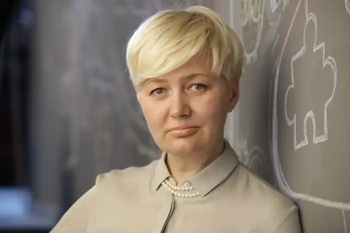

Лариса Миколаївна Ніцой народилася 17 березня 1969 року в смт. Капітанівка Новомиргородського району Кіровоградської області. У 1986 році закінчила Голованівську школу і продовжила навчання на факультеті української мови та літератури у Кіровоградському державному педагогічному університеті, закінчивши його в 1991 році. Після закінчення вишу почала викладати українську мову та літератури в одній зі шкіл Кіровограда. Наприкінці 90-х років переїхала до Києва та активно зайнялася громадською та політичної діяльністю — працювала в апараті партії "Народний Рух України", потім в партії "Реформи та порядок", заступником директора громадської організації "Центру стратегічних розробок". Була головою правління ПрАТ "Кіровоградрибгосп".
З початку 200-років почала займатися письменницькою діяльністю, перший опублікований твір – "Казка про славного Орленка" присвятила річниці загибелі В. М.Чорноволу. Далі світ побачили казкова повість "Пригоди лисеняти Бума" в 2-х частинах, казки "Казка про Українське щастя" і "Дві бабусі в незвичайній школі або скарб в колясці", "Ярик і дракон" та багато інших, а найвідоміша повість письменниці "Незламні мураші" описує військовий конфлікт України на Донбасі. Всі твори авторки написані українською мовою.
Широку популярність Лариса Ніцой придбала не тільки як письменниця та популяризаторка рідної мови, але і як громадська діячка. Дипломантка міжнародного літературного конкурсу "Коронація слова" та Лауреатка Всеукраїнської літературної премії "Гілка золотого каштана" в галузі соціальної прози, у 2020 році її книга "Навіщо песикові гавкати" стала книгою року в номінації "Соціальна книга" за версією книжкової платформи "Барабука". Джерело: https://nashformat.ua/authors/larysa-nitsoj-books